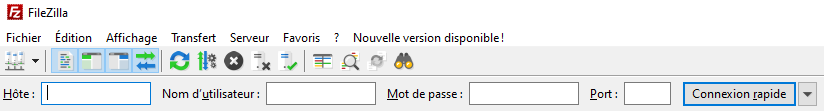
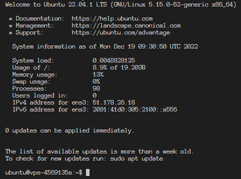
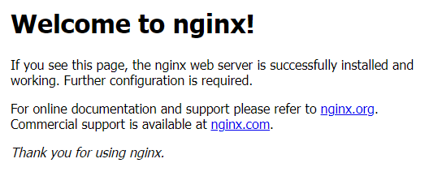

Commençons par voir deux façons de se connecter à un serveur, la première, en SSH via un terminal :
ssh user@adresseIP -p XXXXDécryptons cette commande :
Il vous sera ensuite demandé le mot de passe de l'utilisateur (rien n'apparaît lorsque vous le saisissez ? C'est normal !)
"Mais où est ce que je récupère ces valeur ?"
Ces informations vous sont fournis par le loueur du serveur. Il est fortement recommandé de ne pas conserver l'utilisateur et le port (22) par défaut pour se connecter en SSH, il est préférable d'en créer de nouveaux
Il est également possible de se connecter via un logiciel, cela ne donne pas d'accès aux commandes mais permet d'avoir un explorateur de fichier, ce qui peut simplifier certaines tâches. Faisons la démo avec FileZilla :
Ok maintenant vous devriez avoir ceci :
Nous allons AVANT TOUTE CHOSE mettre à jour les applications contenu sur notre serveur. C'est TRÈS IMPORTANT ! Installer une nouvelle application sans mettre à jour le système peut (si vous avez très peu de chance bien entendu) planter votre serveur.
sudo apt-get update"sudo ? apt-get ?"
"super user do". Cela permet d'élever vos droits pour la commande que vous voulez saisir. Certaines commandes seront autrement refusées. "apt-get" est l'équivalent de "pip"
Installons maintenant les packages nécessaires pour notre application (répondez "oui"" partout):
sudo apt-get install python3-pip python3-dev libpq-dev postgresql postgresql-contrib git treeAvant de passer à la suite, installons une petite librairie python que j'aime beaucoup !
sudo pip install pipenvComme vous l'avez peut être vu, nous avons installé postgresql, il y'a une bonne raison à ça : le programme utilise une base de donnée !
Postgresql est installé mais aucune base n'est créé, connectons nous à postgres:
sudo -u postgres psql"gné ?"
"super user do" "avec utilisateur 'postgres' (utilisateur par défaut de postgresql" "connexion à postgres".
Vous voilà connecter à la base de donnée, faisons un peu de SQL, commençons par configurer la base de donnée en UTF-8 :
SET client_encoding TO 'utf8';On doit également donner un mot de passe à l'utilisateur "postgres" (c'est obligatoire vis à vis de l'application)
ALTER ROLE postgres PASSWORD 'motdepasse';Maintenant créons la base de donnée :
CREATE DATABASE nomdelabasededonnée;Vous pouvez à présent quitter PSQL en tapant :
exitInstallons à présent l'application via git, on commence par initialiser git :
sudo git initMaintenant on pull le repository :
sudo git pull adressedurepoOn saisit le nom d'utilisateur puis le mot de passe et notre application est installée ! Vous pouvez vérifier que tout y est avec :
tree -L 1On peut désormais créer notre environnement virtuel (pipenv installe automatiquement toutes les librairies contenues dans le fichier requirements.txt)
pipenv installUne application Django gère ses fichiers statiques (CSS, images etc.) d'une façon bien particulière, la commande suivante est nécessaire :
pipenv run python manage.py collectstaticNous y sommes presque ! Avant dernière étape : remplir notre base de donnée avec les modèles créés dans l'application :
pipenv run python manage.py migrateCréons notre compte super utilisateur :
pipenv run python manage.py createsuperuserEt pour finir, vérifions que tout est ok en lançant notre application !
pipenv run python manage.py runserverSi aucun message d'erreur n'apparait, c'est gagné, votre application fonctionne ! (vous pouvez faire "Ctrl+C" pour quitter le process)
"Mais comment on fait pour la voir ?"
Vous ne pouvez évidemment pas vous connecter à votre application puisqu'elle fonctionne en local sur votre serveur. Il faut un pont entre les deux pour transférer les requêtes effectuées depuis l'adresse IP publique jusqu'à l'adresse IP privée. On s'agit d'un serveur web ou serveur HTTP
Il en existe plusieurs (les plus connus étant Apache et Nginx). Nous utiliserons Nginx ! Commençons par l'installer :
sudo apt-get install nginxEssayez de vous connecter à l'adresse IP du serveur, voici ce que vous devriez voir :
Créons un fichier de configuration pour Nginx :
sudo touch /etc/nginx/sites-available/nomdelapplicationEnsuite nous devons dire à Nginx de prendre en compte ce fichier de configuration en ajoutant un lien symbolique dans sites-enabled:
sudo ln -s /etc/nginx/sites-available/nomdelapplication /etc/nginx/sites-enabledAttention ça devient technique ! Nous allons lier le trafic entrant à l'application Django. Celle-ci contient trois formats de fichiers différents :
On demande les choses suivantes à Nginx :
Lorsqu'un fichier est renvoyé, on dit qu'il est "servi" par le serveur. Par exemple : "servir les fichiers statiques".
Dans notre cas, nous avons installé une libraire (Whitenoise) qui nous permet d'être feignant avec les fichiers statiques, nous avons juste à gérer les médias et le reste.
Accédons à notre fichier de configuration :
sudo nano /etc/nginx/sites-available/nomdelapplicationEntrez ensuite les données suivantes : (pour enregistrer et quitter le fichier, Ctrl+X et 2 fois Entrée)
server { server_name adresseIPduserveur;
location / {
proxy_set_header Host $http_host;
proxy_set_header X-Forwarded-For $proxy_add_x_forwarded_for;
proxy_redirect off;
proxy_pass http://127.0.0.1:8000;
}
location /media {
alias /home/ubuntu/media;
}
}"Oulalah !"
Mais non ! Décryptons :
On recharge Nginx :
sudo service nginx reloadOn relance notre serveur :
pipenv run python manage.py runserverOn se connecte à l'adresse IP eeeeeet...
"Ça ne marche pas, j'ai une erreur 400..."
Ah oui... c'est parce que l'adresse IP du serveur n'a pas été configurée dans le paramètre ALLOWED_HOSTS de l'application Django.
Ce paramètre se trouve normalement dans le fichier de settings de l'application mais dans le cas présent, il se trouve dans le fichier environment.py. Ouvrez ce fichier puis ajouter l'adresse IP du serveur dans la liste "ALLOWED_HOSTS" !
sudo nano environment.pyRelancez le serveur, retournez sur le site et normalement, tout y est.
On a presque terminé : on va maintenant s'assurer qu'en cas de crash, notre serveur se relance bien automatiquement, pour ce, on va utiliser supervisor, installons le :
sudo apt-get install supervisorOn créé ensuite le fichier de configuration pour notre application :
sudo nano /etc/supervisor/conf.d/nomdelapplication.confEt entrez ceci :
[program:nomdelapplication]
command = pipenv run gunicorn nomdelapplication.wsgi:application
user = utilisateurserveur
directory = /home/ubuntu
autostart = true
autorestart = trueQu-est ce que ça raconte ?
"Guniquoi ?"
Gunicorn ! C'est un serveur HTTP Python pour Unix qui utilise les spécifications WSGI (Web Server Gateway Interface). En production, il n'est pas recommandé de lancer son serveur Django directement via la commande runserver (c'est fortement déconseillé par les développeur du framework). Il est préférable d'utiliser un outil plus puissant et plus performant. Gunicorn est l'un de ces outils.
Il est temps de dire à Supervisor de lancer les processus, on commence par lui faire contrôler nos fichiers de configuration :
sudo supervisorctl rereadPuis on le remet à jour :
sudo supervisorctl updateEnfin, on vérifie que le processus est bien lancé :
sudo supervisorctl statusSi RUNNING apparait, vous pouvez retourner sur votre navigateur pour vérifier que l'application fonctionne bien !
sudo supervisorctl start nomdelapplication
sudo supervisorctl stop nomdelapplication
sudo supervisorctl restart nomdelapplicationPour achever le travail, nous allons lier notre application à un nom de domaine et créer un certificat SSL. On doit commencer par modifier notre fichier de configuration nginx pour ajouter le nom de domaine :
sudo nano /etc/nginx/sites-available/nomdelapplicationOn modifie le paramètre server_name :
server { server_name adresseIPduserveur nomdedomaine.xx www.nomdedomaine.xx;
location / {
proxy_set_header Host $http_host;
proxy_set_header X-Forwarded-For $proxy_add_x_forwarded_for;
proxy_redirect off;
proxy_pass http://127.0.0.1:8000;
}
location /media {
alias /home/ubuntu/media;
}
}On sauvegarde et on prépare directement la création du certificat SSL. Nous allons utiliser Certbot pour créer un certificat SSL gratuit, celui-ci doit être installé via la librairie snap (équivalent de pip) que nous devons installer au préalable :
sudo apt-get install snapdOn s'assure ensuite que snap soit bien à jour :
sudo snap install core; sudo snap refresh coreOn vérifie qu'il n'y ai pas de version auto de Certbot déjà installée:
sudo apt-get remove certbotOn installe Certbot :
sudo snap install --classic certbotOn lance la commande suivante afin de s'assurer que Certbot fonctionnera bien :
sudo ln -s /snap/bin/certbot /usr/bin/certbotOn créé le certificat (pour une config nginx):
sudo certbot --nginxEt c'est fini ! Votre certificat est créé. Il peut mettre un certain temps à être déployé ! Vous pouvez vérifier les paramètres ajoutés en vous rendant sur le fichier de config Nginx :
sudo nano /etc/nginx/sites-available/nomdelapplicationEssayez de vous connecter à votre nom de domaine via https (il faudra peut être attendre quelques minutes)
Félicitation ! Vous avez déployé une application de A à Z et êtes plus à même de savoir comment agir en cas de problème !